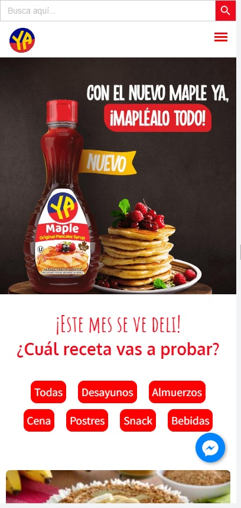
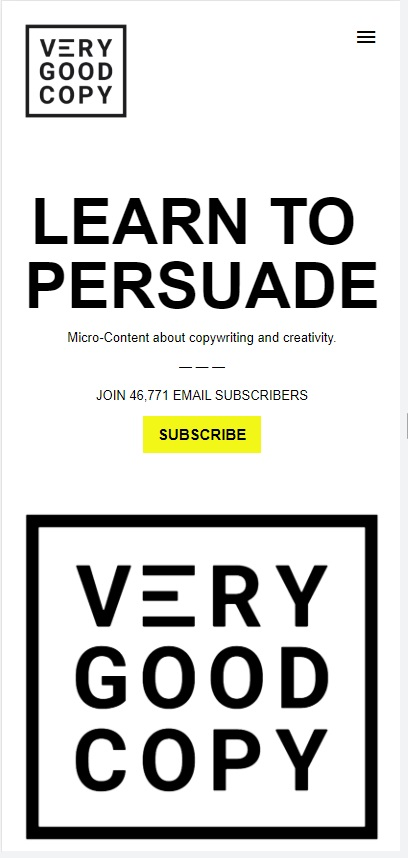

PARC: Contrast
HARINA YA!
https://yayaya.com.ec/

In this example we can see how the product's website contrasts between two colors, a strong and dominant one such as red, in relation to the white that is in the background. Well alternated handling of red/white tones for the different sections, buttons, titles and texts.
FITT'S LAW
VERY GOOD COPY
https://www.verygoodcopy.com

The "very good copy" website shows us in simple terms, the purpose of what we will learn, framed in a strikingly large title. Additionally, and this is where Fitt's law applies, the button to subscribe and access the service is remarkably visible, centered and with a color that attracts attention. It took 1 second for my eyes to go from the title, to the subscribe button.
HICK'S LAW
NIKE STORE
https://www.nike.com/
 The NIKE store website allowed me to visually demonstrate the entire concept framed in Hick's law. Being a web user, coming to the site for a specific need (children's sports shoes), I was able to quickly notice the different categories. Allowing me to get where I wanted in just 2 seconds. Lots of user intuition on this site. Most web catalogs are based on using categories to facilitate the search of products by Internet users.
The NIKE store website allowed me to visually demonstrate the entire concept framed in Hick's law. Being a web user, coming to the site for a specific need (children's sports shoes), I was able to quickly notice the different categories. Allowing me to get where I wanted in just 2 seconds. Lots of user intuition on this site. Most web catalogs are based on using categories to facilitate the search of products by Internet users.